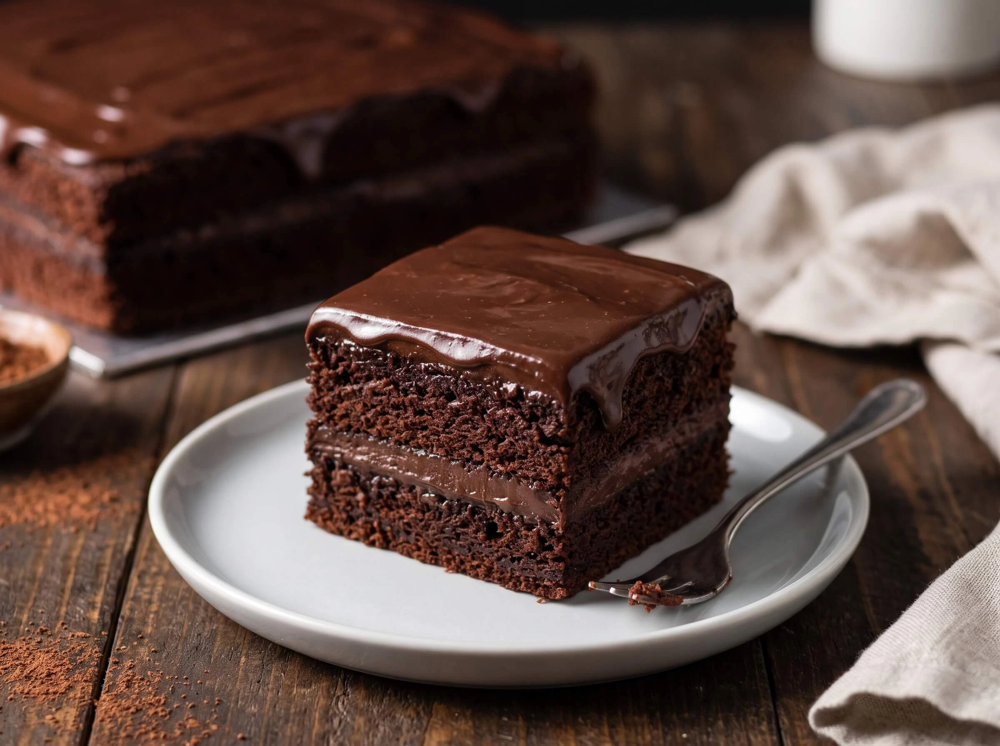

Resep Chocolate Moist Cake (Kek Ketagih) Tanpa Telur
Bikin kue cokelat mewah tidak perlu mahal! Simak resep chocolate moist cake tanpa telur yang super lembut, lembap, dan anti seret berikut ini.
Kumpulan resep viral berbagai jenis hidangan, seperti makanan utama, minuman kekinian, cemilan & jajanan, dan kue & dessert pilihan yang bisa kamu coba dirumah.

Bikin kue cokelat mewah tidak perlu mahal! Simak resep chocolate moist cake tanpa telur yang super lembut, lembap, dan anti seret berikut ini.